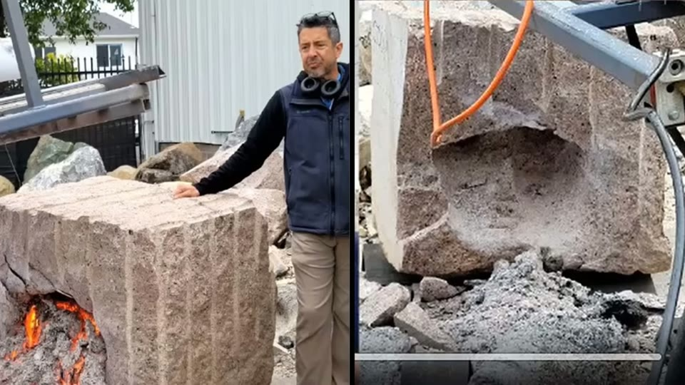
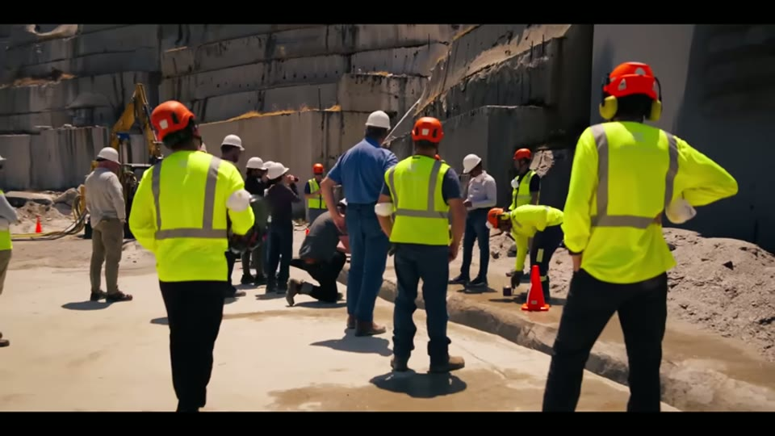
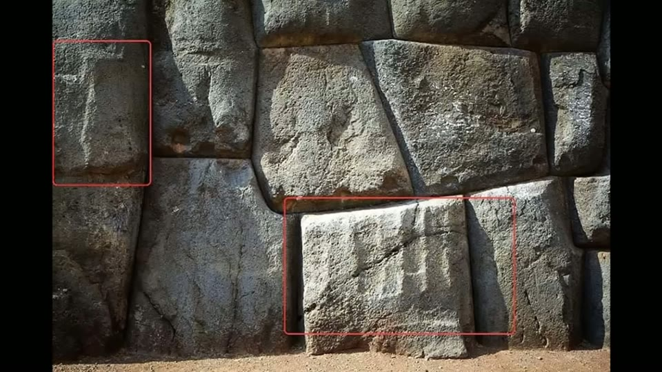
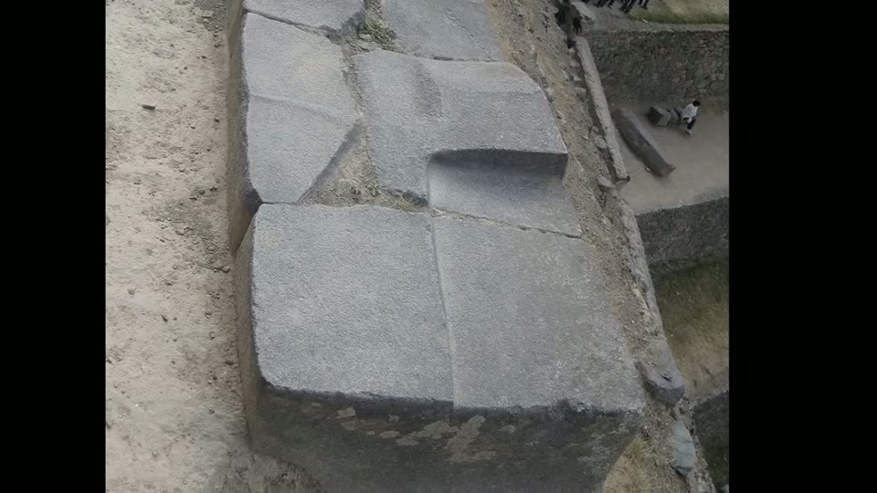
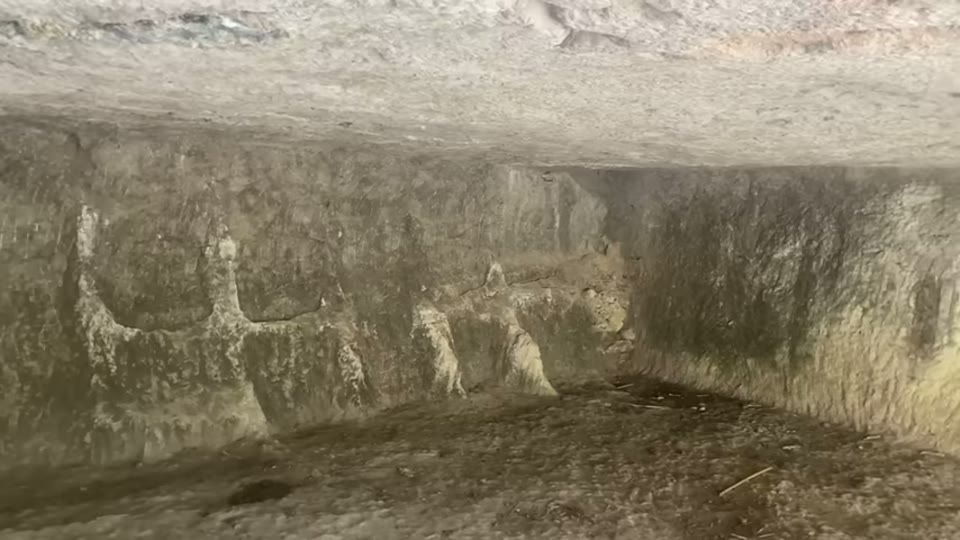
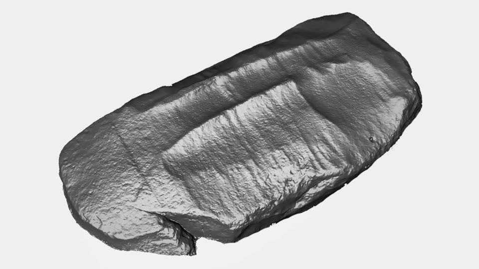

Curious Being
Megalithic Mystery: Different Scoop Mark Types?
Tina · 17 min · watch on YouTube · summarised 2026-08-22
Scoop marks are among the most travelled claims in the field: made famous at Aswan, then reported at Cusco, Ollantaytambo, Sacsayhuamán and Machu Picchu, at Stonehenge, at the Yangshan Quarry in China. Online photographs do make them look alike 00:43–01:24.
Her move is the same one that makes her knobs video good: before explaining a category, check that it is one. She finds four types, and only the first is what people mean by a scoop mark.
Type 1 — Aswan: real excavation marks in granite
The original. Square indents about 40 × 40 cm and vertical scoop bands the same width, which she reads as the size of the tool's cutting face 01:43–02:10.
She clears the ground by elimination 02:28–04:09. Not softened stone — that argument is made in her scoop-marks video, and there is no scooped granite lying about. Not chisel, rotary drum cutter, drill or water jet: the surfaces are uneven, patchy and bumpy with no sharp striations, and the scale is wrong.
And not the natron or chemical theory — a rejection worth noting because it is a popular alternative claim: there is no stone discolouration and no reaction residue on site, and chemistry gives no reason why dissolving rock would happen in specific, repeated, similarly-sized scoop shapes.
Not mechanical, not chemical — so heat.
The comparison that makes the video
She points at Earth Grid, a Bay Area company building plasma tunnel-boring machines whose torches reach around 27,000 °C, vaporising and spalling rock, boring 3–30 m deep 04:31–05:16. A two-torch trial on a granite block left a depression with defined outlines at the top, soft curved lower edges, and two scoop-like indents.

What a plasma torch actually leaves in granite: a defined outline at the top, soft curved lower edges, and scoop-like hollows.
Then the specific case 05:16–06:37: in June 2025 at the Sierra granite quarry, Earth Grid cut a channel in bedrock with a two-torch system. She compares it with the obelisk trench point by point — both in natural granite, comparable in width, the opening not perfectly straight but deviating in the same way, accurate but less precise than line drilling or sawing, the top of the channel rounded, and the channel wall showing slanted vertical stripes each ending at the floor in a curved corner.

The 2025 demonstration cut she compares with the obelisk trench: same material, comparable width, accurate but not machine-precise.
Her conclusion is stated as a conditional rather than a fact: plasma boring is a recent invention, so if the Aswan marks were made this way, they were not made by dynastic Egyptians.
Type 2 — Peru: scraping marks on cast stone
These she says are a different thing entirely 07:23–08:22, and the reasons are physical:
- they are on the faces of finished walls, not in a quarry — not excavation marks at all
- they serve no function and have no bearing on the wall's integrity
- they are shallow, superficial and random, appearing on some blocks and not others
- they are not on granite or quartzite but on softer stone
They look, she says, like scraping marks left on uncured concrete — and at Coricancha and in Cusco a shallow scrape runs across several blocks at once, which cannot happen if the blocks were finished separately and then assembled.

Shallow surface marks on a finished wall, on some blocks and not others, with no structural purpose - which is why she treats them as a different phenomenon from the Egyptian excavation marks.
This leads into her casting hypothesis, argued fully in the Sacsayhuamán entry. One piece of evidence here is new and is the best thing in this half of the video 10:52–12:14: a photograph of an Ollantaytambo wall showing the tops and inner faces of blocks that are normally hidden.
The unexposed sides are as smooth as the display faces. No mason, ancient or modern, dresses a surface that will be buried behind another block — there is nothing to gain. A cast block is smooth on every side for free.
The same photograph shows slightly raised leftover seams marking where the blocks above used to sit — not straight, not of uniform width, more like flexible ridges — and one clean imprint of a departed block, with its rounded corner and edge recorded precisely in the surface beneath.

The strongest new evidence in the video: block faces that were never meant to be seen are finished as smoothly as the display faces, and one block has left its imprint in the surface below.
Type 3 — the lookalikes, which she rejects
The section that earns the entry its deflated tag 12:26–14:25. Two of the most-cited cases outside Egypt, both dismissed:
Yangshan Quarry, China. Scoop marks are claimed inside the cut-out beneath the largest block. A viewer sent her clear, well-lit footage, and what it shows is sharp tool marks all over the surface — chisel or pickaxe work — with crude edges. In dim light they might pass for scoops. They have none of the smooth, continuous, imprint-like quality of the Aswan marks.

One of the two famous cases she throws out. Under good light these are sharp tool marks with crude edges, not the soft continuous hollows at Aswan.
Stonehenge, sarsen 59A. From online photographs the curved surfaces do resemble scoop marks. But the strokes are not uniformly sized, and — the decisive point — at Aswan the tool was used everywhere, extensively, whereas here the marks appear on one side of one stone. She reads them as dressing marks that have eroded, and notes they lose the resemblance entirely from other angles.

The second case thrown out: shallow hollows on one face of one stone, which she reads as eroded dressing rather than tool marks of a distinct kind.
The general lesson is method, not archaeology: a resemblance that only holds in one photograph, from one angle, in poor light, is not a resemblance.
Type 4 — the understudied one
Honest about its own thinness 14:25–15:19. Marks that do look like Aswan's, also on granite, with almost no information available. Her sole source is a 1983 Berkeley report on Inca quarrying, which recorded that cutting marks on the few remaining blocks at the south quarry of Cachiqhata "are very similar to those found on the unfinished obelisk at Aswan and the technique involved must not have been very different from the one used by the Egyptians". As at Aswan, few tools were found — only diorite and quartzite hammerstones.
She does not claim it, she flags it as needing work.
What you can check yourself
- The 40 cm dimension, repeated across the square indents and vertical bands at Aswan, is a measurement.
- Whether the Peruvian marks appear on granite or on softer stone is a question about which walls carry them, and answerable.
- A scrape running across a joint onto the next block either exists at Coricancha or does not.
- The unexposed faces at Ollantaytambo — whether hidden block surfaces are dressed as finely as visible ones — is the strongest checkable claim here and needs one good photograph.
- The Earth Grid plasma channel at the Sierra quarry is recent, photographed and commercial; the comparison can be made directly rather than taken on trust.
- The Yangshan footage is on screen and shows what it shows.
- The 1983 Berkeley report is a real citation with a quotable sentence.
- Natron residue and discolouration at Aswan is a surface-chemistry test.
What the video does not settle
- The plasma comparison proves possibility, not identity. That a 27,000 °C torch leaves marks resembling these does not establish that these were made that way — several thermal and mechanical processes could produce rounded, spalled, irregular hollows. What would separate them is residue on the rock, and again it is not examined.
- Nothing rules out unknown ancient methods in the same breath as ruling out chisels. The argument runs "not any modern method I recognise, therefore an advanced one", which skips the possibility of a competent method nobody has reconstructed.
- Type 2 depends entirely on the casting hypothesis being right. If the Peruvian walls are carved stone, the scraping marks need a different explanation and none is offered.
- The Ollantaytambo photograph is used but not sourced. For the best piece of evidence in the video, no provenance is given — which wall, whose photograph, when.
- The four-type scheme is her own, and assigning any particular mark to a type is a judgement, as she effectively concedes by creating a category for the ones she cannot place.
- Type 4 is one sentence in one 1983 report and is presented as such.
See also
World's Largest Monolith: Yangshan Monument — the 2020 video in which the same cut-out beneath the same Yangshan block is offered as possible machine work. Here it is crude chisel or pickaxe work. Neither video mentions the other.
Scoop Marks in Egypt: A Groundbreaking New Hypothesis — the Aswan case argued at length, including why granite cannot be softened.
How Were Sacsayhuamán Polygonal Walls Built? — the casting hypothesis that Type 2 depends on.
What we have not checked
- The captions mangle almost every proper noun. Corrected here from context: Aswan (rendered as Oswan, Azwan, Awan, Adas), Ollantaytambo (Oante Tombbo, Oante Tumble), Sacsayhuamán (Saxi Huan, Zaki Hmon), Coricancha (Kuracantra), Yangshan (Yang Xang, Yangjang, Yang Corey), Cachiqhata (Kachicada).
- The 1983 report's author is given by the captions as "John Pierre present at University of California, Berkeley". This is almost certainly Jean-Pierre Protzen, whose work on Inca quarrying and stonecutting is the standard reference — but the name is inferred, not heard, and the report has not been located.
- The second Egyptian quarry she names alongside Aswan is unintelligible in the captions ("corzac"); from her other videos it is likely the quartzite quarry on the west bank.
- Earth Grid's figures — 27,000 °C, 3–30 m depth, the June 2025 Sierra quarry channel — are as she gives them and have not been traced.